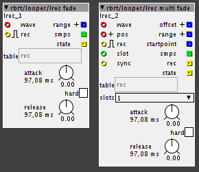

You rock! I'll check them out as soon as possible
Rbrt Contributions
valmir
#131
 mumble...
mumble...
Will it keep recording? If so (in my use case) you'll end with a strange loop, with the last part overwritten at the beginning... wouldn't it be better to stop recording altogether and maybe output a boolean ?
That looks so cool, it will make dozens of envelopes in my patch obsolete!
rbrt
#132
re-structuring my objects again
seems like it does work to change the object's location in the library structure.
so,I created a folder named 'old' for objects I consider crap or out of data.
your patches should still be working...I did a backup of my folder before syncing,
so I can undo.
rbrt
#133
lrec fade

I really like these!
record a loop,after you stop recording,the objects starts overdubbing into your recording with a fade-out.
thus,there is no click at the loop end when recording is stopped.
you can set the release-time with 'release'.
also,if you use a long release,you could record a drum-loop with a cymbal on beat 4,
and it will not be cut off but be 'smeared' onto the start of your loop.
(of course,there will be a bit of cymbal when you start the loop...a solution would be to record the fade-out
to a second buffer but I'm too lazy to implement this now)
'attack' applies a fade-in when recording is started.if you want NO fade-in at ALL,enable 'hard'.
rbrt
#134
midi
{kind=link}
so,here's some new midi-objects,mainly targetting midi-feedback for controllers that do so.
basically,there are 2 different concepts here:
-use a range of notes or cc-messages to edit the contents of a table,
and send out the contents of that table
-directly receive and send a range of notes or controllers
there's a helpfile 'midi.axh' in rbrt/midi already,but I didn't implement this into the objects yet.
rbrt
#135
...hm...maybe that makes more sense...
I did it this way because I didn't want people to end up with un-synced loops just because the forgot to press 'stop'..
but I'll reconsider..
valmir
#136
I synced the library and reload the objects but lrec still crashes the axo upon exceeding the table lenght...
but in the meanwhile I'm having loads of fun with lrecfade!
valmir
#137
OK, sorry for the little spamming, upon restarting the patcher everything is working as expected. Still is not very logical in my specific scenario, but I'll try to patch a way around it. Thanks a lot!
Blindsmyth
#138
Hey I'm having problems with the lrec multi, sometimes it doesn't stop recording right although the toggle at the rec inlet is off.
I'm trying to figure out where the problem is and was wondering if you changed the object. Github says you uploaded a version 2 days ago, so is this an updated version?
rbrt
#139
...o...sounds like trouble...
yes I did some changes,but I thought everything was ok..
I will definitely have a look tomorrow early..
anyway,I did a backup,here's the 'old' lrec multi
lrec multi.axo (4.1 KB)
Blindsmyth
#140
ok thx! did change some of the other objects too? Just in case I realize things work differently/not in my patches.
rbrt
#141
I just reverted lrec and lrec multi to the old versions and synced libraries..
everything should be back to normal again now
....good example of what can go wrong when you try to improve existing objects...
Blindsmyth
#142
yes indeed! it's not the first time that this actually happened. It would be great if Axoloti asked you if you wanted to update the objects in your patch, and after doing so an easy possibilty of undoing the update if you don't like the result.
That way you folks can keep developing and we can decide if we want to follow the developments or not...
Blindsmyth
#143
he mr rbrt I'm trying to make a more flexible quantization engine.
basically what I want to do is
1.find out what a loops length is in musical terms,
either a quarter, half, bar, 2 bars etc.
and divide down it's length to a quarter note.
2.Then I want to multiply it up again and set this to the frequency input of the quantization phasor.
I'm a bit stuck at 1. here any Ideas? I have screenshot that makes it more clear where the missing link is:
K Quantization Engine.axp (14.4 KB)
and the patch (not really usable yet, just a theoretical starting point!)
{kind=link}
P.S. Ah theres a flaw in my logic, dividing the frequeny down does make each quantization cycle longer! the opposite of what I want to have
Blindsmyth
#144
ok sorry for triple posting here but I came up with something that seems to work:
K Quantization Engine 3_0.axp (16.3 KB){kind=link}
Only thing I need to know if you think that dividing or multiplying the frequency of the quantization phasor will be inacurate and fuck the timing up.
Also this looks little bit like the stuff that could be more elegant in coding, but I still got it working 
rbrt
#145
...I'll have a look in the evening...it will most probably not be sample-accurate anymore..
the testing approach is to scale your results up again and see how much difference (or,in musical terms,timing drift) you will get...
Blindsmyth
#146
ok cool thx!
here is another aproach:
{kind=link}
K Quantization Engine 3_7.axp (26.5 KB)
I think this will work a lot nicer. When I understand it correctly I multiply the number of samples / frequency most of the time, so that way I shouldn't loose acuracy.
I'm little bit undecided how flexible this really should be. I see the potential here for also doing 3/4 or 7/8 time signatures.
on the other hand going 4/4 it could be patched more efficently.
Propably I will go for the odd signatures 
rbrt
#147
hmm I sketched something,which makes looong loops fit nicely into a desired time-sceme...
I didn't do anything about vry shrt lps.
the main item here is 'phasor div' which left-shifts the length (in samples),controlled by 'div remc' by @SirSickSik
I guess I will do something like 'phasor mul' to complete this..
I didn't do anything regarding clock division,which would be cool for polyrhytmic stuff of course..
check it out...
cheeerio;rbrt
{kind=link}
hmmm.axp (10.1 KB)
rbrt
#148
...but...I don't like the fact that it's shifting,not actually dividing the tempo..
I'll think about it some more
Blindsmyth
#149
hmmmm somehow the hmmmm didnt work out for me. The divisor numbers where not really usable.
What I patched together seemed to work. I didnt notice any drifting.
The only this is with external midi clock I have some drifting. That's why I hooked up an engine to retrigger loops at the beginning, but its quite clicky and doesnt work too well yet.
Here is my looper patch so far:
A Looper Sub 3_3_2 new sync.axp (205.0 KB)
It's really really massive, I tried to explain it the best way possible I don't know if you can get it but I thought I'd post it here. Might be interesting for you too what people do with your blocks and if you get it or have questions or suggestions let me know.